|
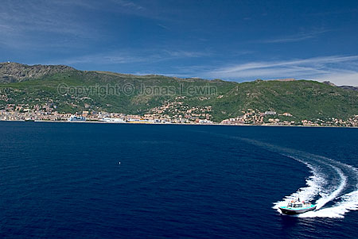Arriving
here felt a bit like arriving in Gotland, but somewhat warmer.
Please remember that all these images have been modified more than usual to
look nice.
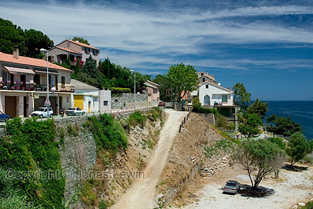A
few minutes driving after arriving, and the town looks like this. Is this
laid back or what?
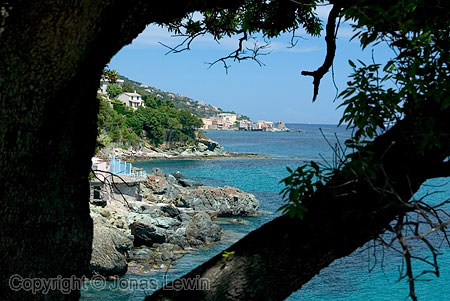The
coastal line is what makes Corsica famous. The diving and the scenery.
Just think twice before going there. It's quite expensive (more epensive
than monaco), and the scenic roads are narrow, and very slow. If you reach 50
km/h even once in one hour, consider yourself lucky.
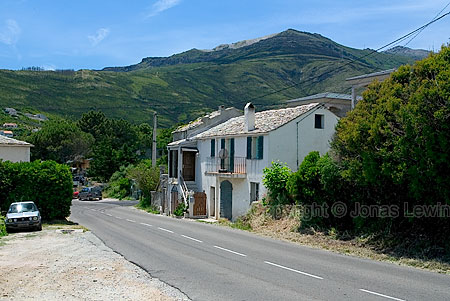Nice
landscape. But everything seems closed. Even the woods seem to be closed,
unless you take a closer look.
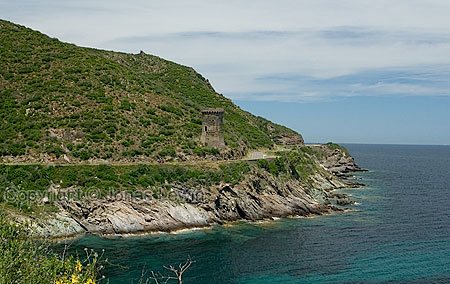There
is a biker in red parked on the road, but they guess the got lost when
shrinking the image to web-size.
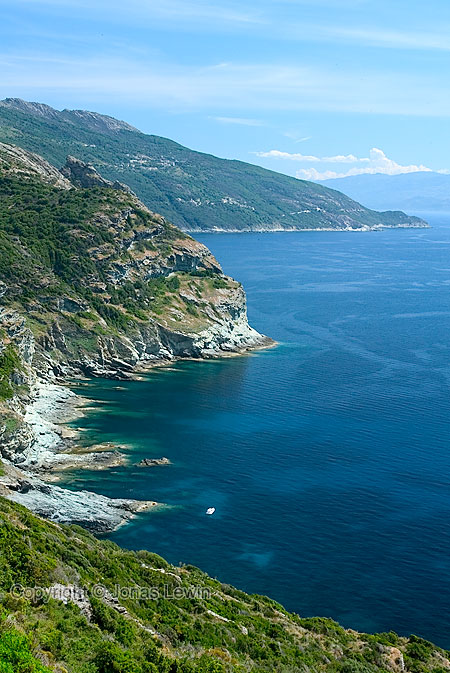Yes,
it's a ship down there. It looks just amazing, but take a closer look at the
beach. Is this the beach you want to be at?
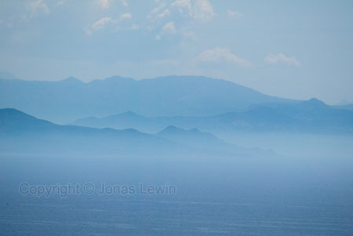This
gives more justice to Corsica. Hot, humid, and very much sun haze.
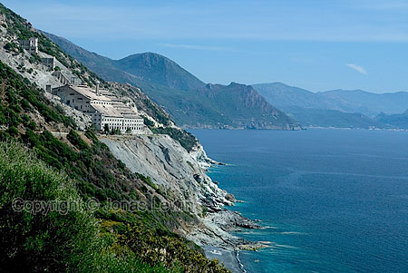Cool
building. Too bad it's a closed factory.
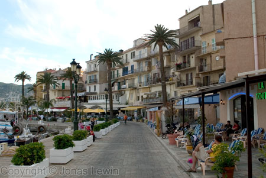The
harbor in Calvi. Quite well adapted for tourists, and as there is nowhere
else to eat, the food is quite expensive.
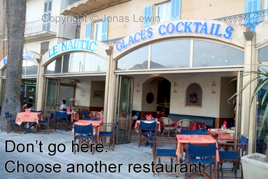The
food is not only expensive at Le Nautic in Calvi. It also makes the second
worst pizza I have ever tried. The downside of this is that it was the most
expensive I have ever tried, so it didn't improve the situation.
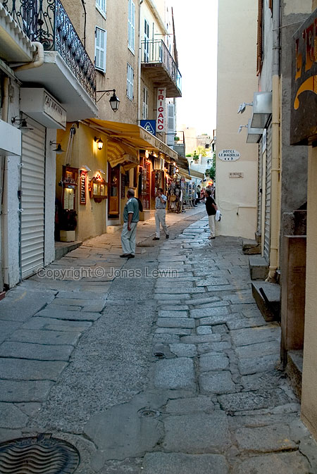A
few meters from the water line, you can find this nice alley. Custom made
for families, as they sell only bathing things, and postcards at a high
price.
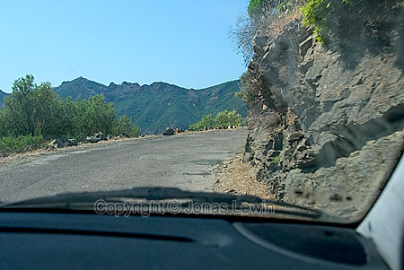Just
a reminder: The roads are not the best. They all look like this along the
coast. Worn, slow and sometimes dangerously steep. We saw a few cars that
didn't make it, and they where lying far away.
|